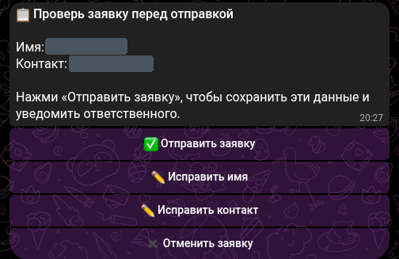
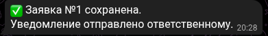
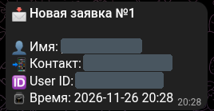
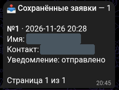

Бот для приёма заявок
Четыре фрагмента одного обращения · Показ по договорённости
Сначала человек проверяет оба поля. После отправки видит номер заявки. У ответственного есть карточка и сохранённый список — к контакту можно вернуться позже.
В примере карточка и список открыты с правами владельца в одном чате. Совпадают номер 1 и время 20:28. Личные данные на кадрах скрыты.







